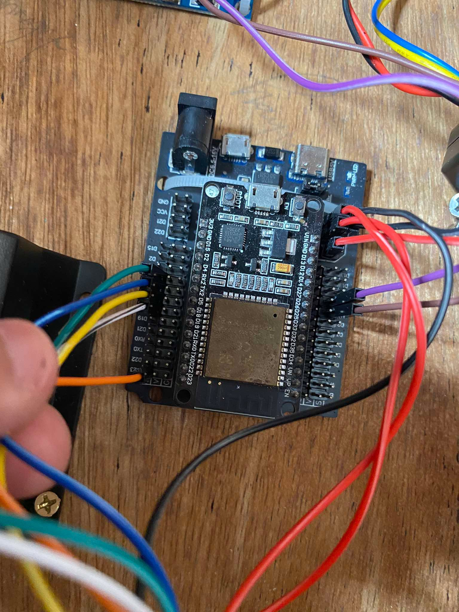
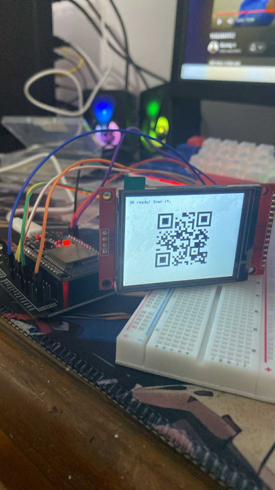
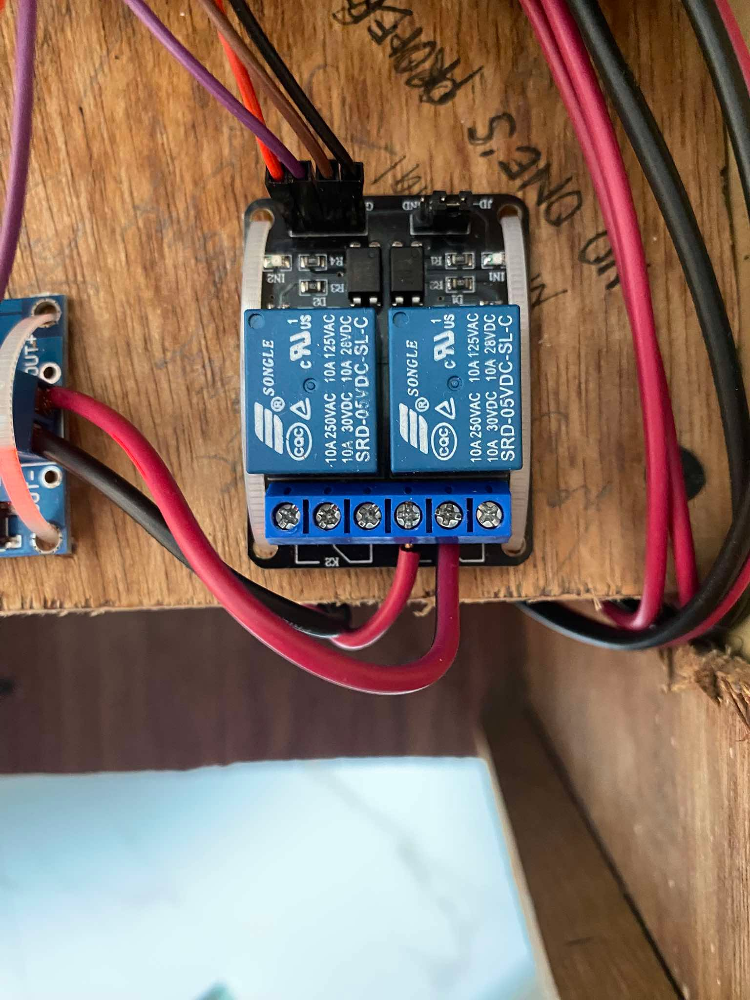
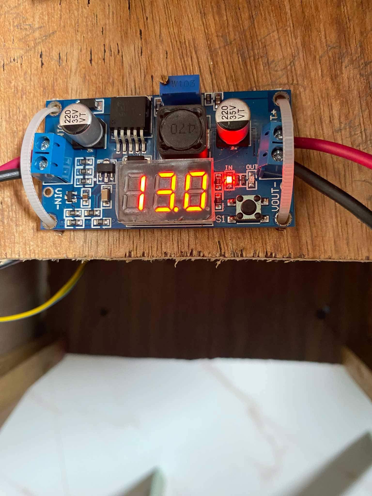
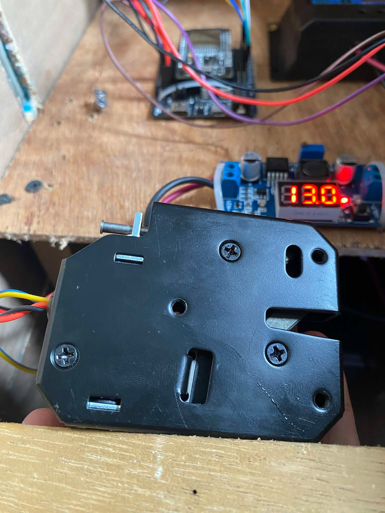
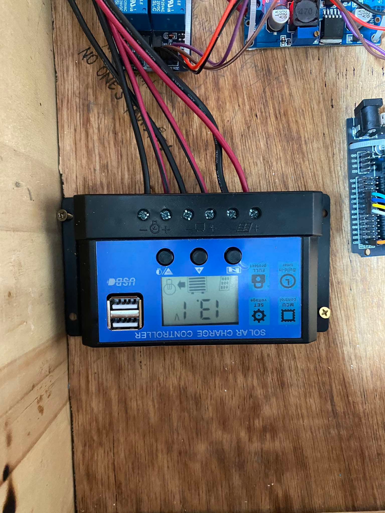
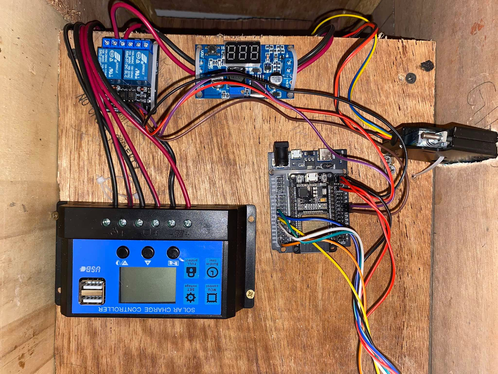

HARDWARE DEVELOPMENT
Hardware Development
The hardware component of LOCKANDGO was developed and assembled step by step. Each component was tested before being integrated into the complete system.
01. ESP32 Controller
The ESP32 serves as the main controller of the smart locker system.

02. TFT Display
The TFT display is used as part of the locker interface and QR display system.

03. Relay Module
The relay module is used to control the electronic locking mechanism.

04. DC-DC BUCK
The DC-DC buck is used to control the supply of voltage from solar panel.

04. Solenoid Lock
The electronic solenoid lock provides the physical locking mechanism for the bicycle locker.

05. Solar Power System
Solar power components provide the energy source for the system.

06. Solar Charge Controller
Solar Charge Controller is an essential hardware device in a solar power system that regulates the voltage and current coming from solar panels before it reaches the battery bank.

06. Wiring and Assembly
The components were connected and assembled to form the complete hardware system.
